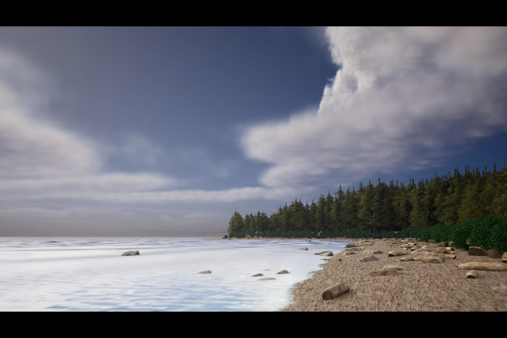

Back to home page
Real-life picture vs Unreal Dark vs Unreal Light White Rock Beach in Unreal Engine
This project is my first attempt at building anything in Unreal Engine. I decided to try to recreate White Rock Beach and render a cinematic video that resembles the beach in real life. Please watch the video to see this render and learn more about my process building this project.
Unreal Engine Skills Learned
- Water Systems
- Building Landscapes
- Altering materials
- Placing foliage
- Sky and Rect Lighting
- Using Movie Render Queue to animate camera and objects
Photos

Other photos: